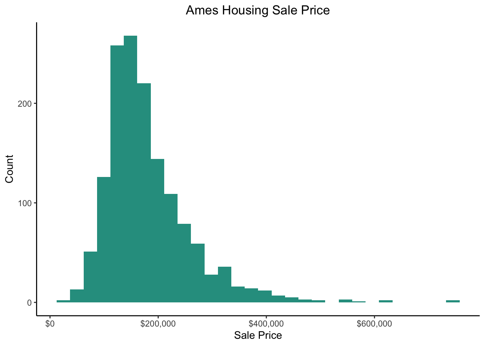

| id | sq_ft | sale_price |
|---|---|---|
| 1 | 1710 | 208500 |
| 2 | 1262 | 181500 |
| 3 | 1786 | 223500 |
| 4 | 1717 | 140000 |
| 5 | 2198 | 250000 |
| 6 | 1362 | 143000 |
| 7 | 1694 | 307000 |
| 8 | 2090 | 200000 |
| 9 | 1774 | 129900 |
| 10 | 1077 | 118000 |
Improving ML models after they’re already been built is fun and can lead to some immediate gratification. You might tweak the hyper parameters and cross validation to improve the generalizability of your model. You may switch out the algorithm itself. Lets say you move from using neural nets to gradient boosted trees to see if you can move the accuracy score even close to 99%. At a certain point though you won’t be able to improve your model without over fitting. Often times, you need to take a step back and look at the raw data itself to see if new variables can be created from the old that lead to improvements. This is what’s called feature engineering
Feature Engineering is the process of selecting, manipulating, and transforming your data into features, or variables, that are useful for machine learning. Whereas data cleaning is generally the process of subtracting irrelevant data, feature engineering is a process of addition, adding more relevant information to your data set.
Simplification
Simplification is a major part of feature engineering. Combining two or more variables can increase the speed and accuracy of our model. Just to conceptualize what that would look like, I’ve pulled data from the Ames Housing data set on Kaggle. It includes a variable for square footage and final sales prices.

If we were in the neighborhood looking to buy a house, it would not be prudent to only consider the listing price. We would want to know how much we’re paying for each square foot. This sounds so simple, but feature engineering in this case involves just dividing sales price by square feet to identify the cheapest house.
| id | sq_ft | sale_price | cost_sqft |
|---|---|---|---|
| 1299 | 5642 | 160000 | 28.35874 |
| 31 | 1317 | 40000 | 30.37206 |
| 1063 | 2337 | 90000 | 38.51091 |
| 969 | 968 | 37900 | 39.15289 |
| 524 | 4676 | 184750 | 39.51027 |
| 1293 | 2372 | 107500 | 45.32040 |
| 199 | 2229 | 104000 | 46.65769 |
| 411 | 1276 | 60000 | 47.02194 |
| 496 | 720 | 34900 | 48.47222 |
| 677 | 1774 | 87000 | 49.04171 |
| 810 | 2138 | 106000 | 49.57905 |
| 706 | 1092 | 55000 | 50.36630 |
| 1350 | 2358 | 122000 | 51.73876 |
| 884 | 2230 | 118500 | 53.13901 |
| 1133 | 2210 | 117500 | 53.16742 |
| 1417 | 2290 | 122500 | 53.49345 |
| 813 | 1044 | 55993 | 53.63314 |
| 1388 | 2526 | 136000 | 53.84006 |
| 667 | 2380 | 129000 | 54.20168 |
| 243 | 1440 | 79000 | 54.86111 |

Based on our transformation, our distribution is almost perfectly normal.
Random Forest
In terms of ML feature learning is all about more accurately representing the relationship between your features.The kaggle tutorial on feature engineering has been really helpful understanding this through code.
import pandas as pd
from sklearn.ensemble import RandomForestRegressor
from sklearn.model_selection import cross_val_score
ames = r.ames2
X = ames.iloc[:,:-1]
y = ames.iloc[:,-1]
# Train and score baseline model
baseline = RandomForestRegressor(criterion="absolute_error", random_state=0)
baseline_score = cross_val_score(
baseline, X, y, cv=5, scoring="neg_mean_absolute_error",
error_score='raise'
)
baseline_score = -1 * baseline_score.mean()
print(f"MAE Baseline Score: {baseline_score:.4}")MAE Baseline Score: 11.4Looking at just the numeric variables, the MAE is not that bad. There are several variables that could be adjusted, added, or transformed to make them more useful. For example, there are variables for year built and year remodeled. By itself, year remodeled is odd in that new homes have year built as their remodeled year, and some older homes have decades between when they were built and when they were remodeled. Therefore, it might be better just to use the difference between year built and remodeled instead of just the remodeled year. Additionally, there are two variables for bedroom and total rooms, so we know they are already going to be highly correlated with each other. It might be more meaningful from a cost perspective to show the ratio of total rooms to bedrooms to avoid any duplication
MAE Updated Baseline Score: 11.38Creating these new variables only slightly improved the model. Oh well!
Mutual Information
One of the common ways to gain an initial understanding of your data is to measure how different variables are correlated with each other, or rather how two variables are linearly related. This can be done with a correlation matrix of your dataset fairly easily, but what do you do when a non-linear relationship exist? This is where mutual information comes in.
Mutual Information is a measure that tells us how much one random variable tells us about another. [^1]
[^1]: Latham, P. E. (2009, January 21). Mutual information - Scholarpedia. Scholarpedia. Retrieved May 22, 2022, from http://www.scholarpedia.org/article/Mutual_information]